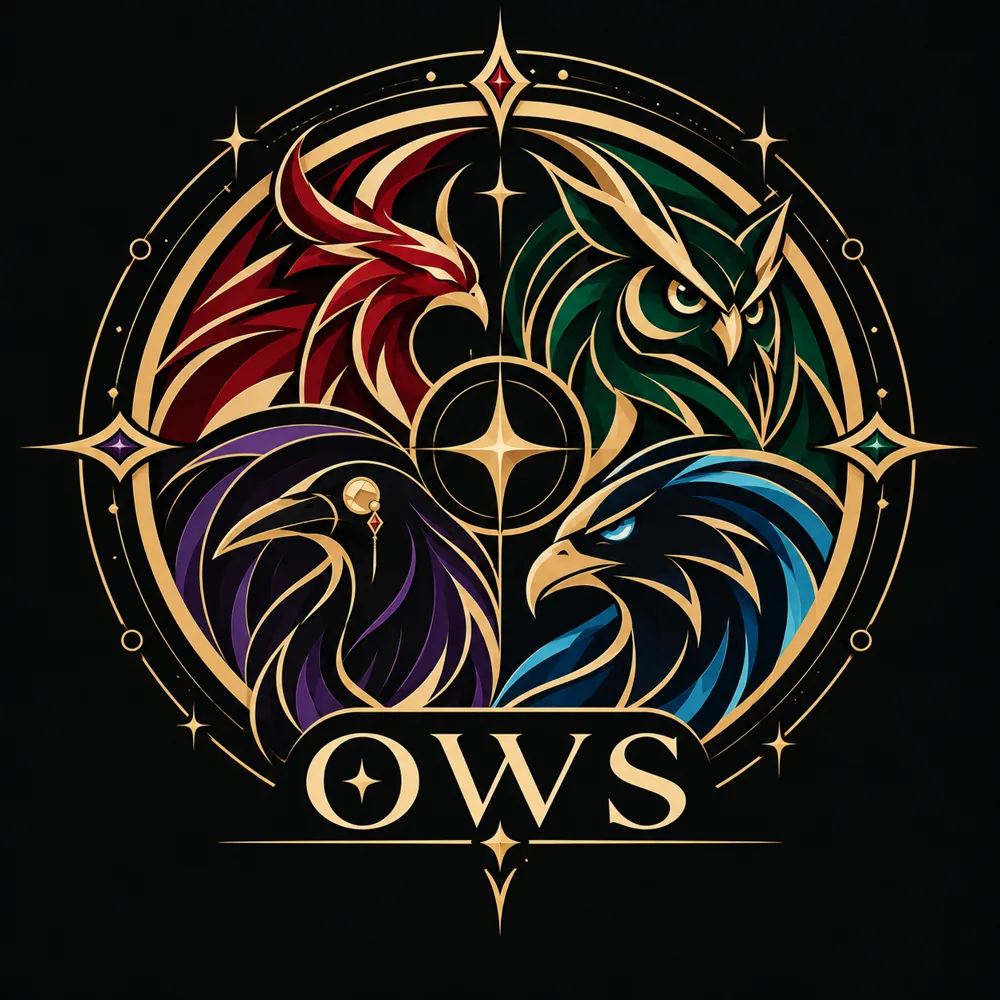

JOUEURS EN LICE
17/ 17
Sur le serveur EUW
17 invocateurs. Une seule compétition. Chaque partie compte, chaque LP fait la différence.

Classement initial par rang, puis par progression nette en LP après synchronisation.
| POS. | INVOCATEUR | RANG SOLOQ | LP | PARTIES | V / D | WINRATE | LP NETS | SOURCE / DERNIER RELEVÉ | OP.GG |
|---|---|---|---|---|---|---|---|---|---|
| Chargement du classement… | |||||||||
Progression nette en LP depuis le début.
Les résultats apparaîtront après synchronisation.
Relevés sauvegardés chaque semaine.
L’historique se remplira au fil des semaines.
La période de calcul commence le 31 octobre 2026 à 23h17, heure de Paris. Le rang et les LP de départ servent de référence ; les parties sont comptées selon leur date de début, avec leurs victoires et défaites. Les parties Flex et les remakes sont exclus. Le site conserve chaque partie retrouvée. Si l’historique public ne couvre pas toute la période, les totaux sont partiels et signalés comme tels.
La colonne « LP nets » compare le niveau classé actuel au rang et aux LP de départ, en tenant compte des changements de division. Ce n’est pas l’historique exact des gains et pertes à chaque match. Les rangs de départ ont été renseignés, mais la plupart ne sont pas certifiés à la minute près et une remise à zéro de saison peut affecter la comparaison.
Les rangs et LP peuvent être relevés sur les pages publiques OP.GG lorsque l’accès est permis ; sans clé officielle, aucun rafraîchissement ni disponibilité n’est garanti. Le site n’est pas affilié à Riot Games ou OP.GG.